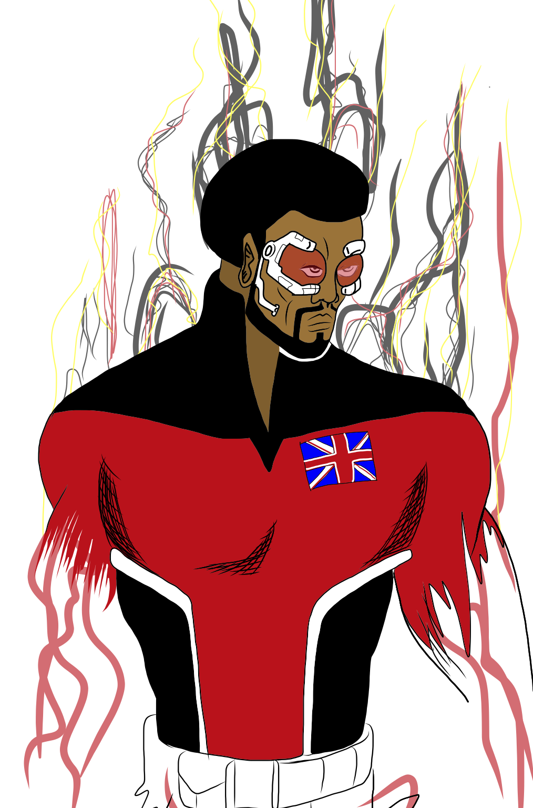

The Queen is a rarity in the psi-community. She is considered a prodigy in that she has abilities in all the of the five main talents. While she doesn't rate very high in all categories, she does rate high in three of the five.
When the Royal Marines, the Royal Navy and James Bond aren't enough, whom does the Prime Minister call? Meet Great Britain's finest defenders of the realm.
The LCM motto "The sun will never set on the British Empire."
Out of the ashes of WWII, the UK formed a taskforce for dealing with the threats that required an unorthodox solution.
Created as a secret tactical assault team for handling threats both foreign and domestic, Lord Chamberlain's Men is comprised of paranormal operatives supported by elite squads of SAS and Royal Marines who are sworn to protect Her Majesty's government. When the shit really hits the fan the Prime Minister doesn't call the Army, or the Navy, not even the Royal Marines, they call Lord Chamberlain's Men.
Named after William Shakespeare's first acting troupe, the LCM is a covert tactical assault force of paranormal agents based around the game chess, they are the stuff of legend.
The Ministry of Defense will only activated the team when the security of the United Kingdom is threatened and normal venues of achieving the objective are unavailable.
Queen
Bishop

Edward Baker has the ability to teleport a finite amount of mass almost instantaneously over a short distance. The maximum distance he can travel is up to 1 and 1/2 kilometers. His ability to move over distances is a result of his mutant power to fold or bend space/time. It has been theorized that his power is being underutilized in that he should be able to move through time as well as space, but as of now he hasn't demonstrated this ability. Originally he could only teleport along a line of sight. Since he has been with the LCM, he has allowed extensive surgery to enhance his natural power with cybernetic implants that link him up to the LCM's dedicated satellite network. The cybernetics allow him to see behind walls and over greater distances. The implants also give him the ability to lock in on a dime (he has an upper and lower limit, so this dime would pull along everything else within a 1/4 meter radius.)
Bishop is the reluctant warrior of the team as well as its most senior member, having served for close to 13 years. Of late he has considered retiring and wants to quit, but doesn't (possible secret that the GM is holding over him due to the substantial dollar sign invested in him.)
He is also recovering from an addiction to the first generation of implants (the first generation of hardware was so intense that he would continue to use the network after a mission was completed.